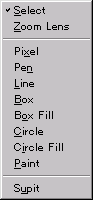

| Menu |
Image |
Explanation |
| 1. File |
|
New... opens the dialog for creating either a
TMF file or a TPF file. Select either of these two file types, and the corresponding TPF/TMF dialog opens.
Open... opens the dialog to open a file.
Close closes the file that is currently being edited.
If the file has not been saved at this time, a dialog opens asking the user whether or not to save the file before closing, or to cancel the command.
Save saves the file that is currently being edited.
If you act to save a new image which has not been named yet, the Save File dialog opens, giving you the opportunity to give the image a file name and then save.
Save As... saves the file that is currently being edited under the user-specified name. The Save File dialog opens, giving you the opportunity to give the file a new a file name.
Import imports another file into an image.
See also: Importable files
Export outputs a picture image to another file.
See also: Exportable files
Print,
Print preview, and
Printer settings are not supported at this time.
Exit quits the application.
All files currently being edited are closed.
If some file has not been saved at this time, a dialog opens asking the user whether or not to save the file before closing, or to cancel the command.
|
| 2. Edit |
|
Undo lets you undo a change and return the image to its original form.
The application records the state of the image back through the last 100 changes.
See also: Undo
Redo has the opposite effect of redoing what was just undone.
See also: Redo
Cut copies the selected image to the clipboard and then deletes it.
See also: Cut
Copy copies the selected image to the clipboard.
See also: Copy
Paste inserts the image that is in the clipboard.
See also: Paste
Flip horizontal - Flip vertical turns the selected image around.
See also: Flip horizontal and Flip vertical
Add to project adds the currently active TMF (must be attached to TLF) to the project.
|
| 3. Projects |
|
New... opens the New Project File dialog.
Please select this item when editing a new TPF.
Open... opens the Open File dialog.
Close closes the project (TPF) that is currently being edited.
If the project file has not been saved at this time, a dialog opens asking the user whether or not to save the file before closing, or to cancel the command.
Save saves the project (TPF) that is currently being edited.
If you act to save a new project which has not been named yet, the Save File dialog opens, giving you the opportunity to give the project a file name and then save.
Save As... saves the project (TPF) that is currently being edited under the user-specified name. The Save File dialog opens, giving you the opportunity to give the project a new a file name.
Add picture adds a new picture to the project that is currently being edited.
The Picture Settings dialog opens for you to set and register the new picture name and the image and the palette.
See also: Add
Change picture changes the picture composition registered in the the currently edited project.
The Picture Settings dialog opens for you to change the composition of the image and the palette.
See also: Change
Remove picture removes a picture registered in the the currently edited project.
See also: Remove
Properties opens the Properties of the currently edited project.
See also: Directory
|
| 4. Palettes |
|
New... opens the New Palette File dialog.
Please select this item when editing a new TLF.
Open... opens the Open File dialog.
Close closes the palette (TLF) that is currently being edited.
If the palette file has not been saved at this time, a dialog opens asking the user whether or not to save the file before closing, or to cancel the command.
Save saves the palette (TLF) that is currently being edited.
If you act to save a new palette which has not been named yet, the Save File dialog opens, giving you the opportunity to give the project a file name and then save.
Save As... saves the palette (TLF) that is currently being edited under the user-specified name. The Save File dialog opens, giving you the opportunity to give the project a new a file name.
Edit edits the colors of the specified palette.
Attach allocates the current palette to the currently active image.
Nothing is displayed for an image that does not have an attached palette.
Undo lets you undo a change and return the palette to its original form.
The application records the last 100 changes.
See also: Undo
Redo has the opposite effect of redoing what was just undone.
See also: Redo
Copy copies the selected palette to the clipboard.
Paste inserts the palette that is in the clipboard.
|
| 5. Draw |
 |
Select selects a rectangular area for editing.
See also: Select rectangle
Zoom is the mode for viewing the selected screen position in an enlarged or reduced form.
See also: Zoom function
Pixel draws one point. The point is drawn with the color currently assigned to the pen.
See also: Pixel
Pen is the "free draw" mode. The line is drawn with the color currently assigned to the pen.
See also: Pen
Line draws a straight line. The line is drawn with with the color currently assigned to the pen.
See also: Line
Box draws a rectangle. The rectangle is drawn with with the color currently assigned to the pen.
See also: Box
Box fill draws a filled-in rectangle which is filled with the color currently assigned to the pen.
See also: Box fill
Circle draws a circular shape. The circle is drawn with the color currently assigned to the pen.
See also: Circle
Circle fill draws a filled-in circle which is filled with the color currently assigned to the pen.
See also: Circle fill
Paint fills the selected area with the color currently assigned to the pen.
See also: Paint
Pick with right-click picks up a color from the image and assigns it as the current color of the pen.
See also: Pick with right-click
|
| 6. View |
|
Tool bar turns display of the Tool bar ON/OF.
Status bar turns display of the Status bar ON/OFF.
Project bar turns display of the Project dialog bar ON/OFF.
Palette turns display of the
Palette dialog bar ON/OFF.
Draw mode bar turns display of the Draw tool bar ON/OFF.
View bar turns display of the
View tool bar ON/OFF.
Zoom enlarges the image on display.
See also: Zoom function
Grid turns the grid display ON/OFF.
See also: Grid
Preview 1/2 turns the Preview function ON/OFF.
See also: Preview function
|
| 7. Windows |
 |
The same as in other applications. Explanation is omitted.
|
| 8. Help |
|
Topic Search opens c:/nintendo64/texedit/doc/index.html
About opens the About dialog.
Use this to check which version of the product and which plug-ins have been installed.
|
 Save
Save About
About


{kind=link}